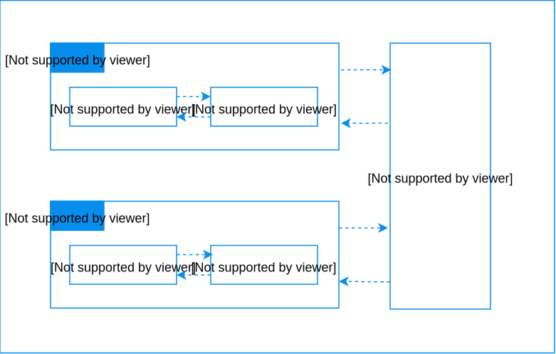

Definition
The Java volatile keyword is used to mark a Java variable as being stored in main memory More precisely that means, that every read of a volatile variable will be read from the computer's main memory, and not from the CPU cache, and that every write to a volatile variable will be written to main memory, and not just to the CPU cache.
Main memory and CPU caches
Basic Example
Many thanks to Thibault Delor for sharing a simple example where this keyword is required
public class Main {
private static volatile int sharedCounter = 0;
public static void main(String[] args) {
new SharedCounterWriter().start();
new SharedCounterReader().start();
}
static class SharedCounterReader extends Thread {
@Override
public void run() {
int counter = sharedCounter;
while (counter < 5) {
if (counter != sharedCounter) {
System.out.printf("sharedCounter new value : %d\\n", sharedCounter);
counter = sharedCounter;
}
}
}
}
static class SharedCounterWriter extends Thread {
@Override
public void run() {
while (sharedCounter < 5) {
System.out.printf("incrementing sharedCounter: %d\\n", sharedCounter + 1);
sharedCounter++;
sleepQuietly(500);
}
}
}
}
Output with the volatile keyword
incrementing sharedCounter: 1
sharedCounter new value : 1
incrementing sharedCounter: 2
sharedCounter new value : 2
incrementing sharedCounter: 3
sharedCounter new value : 3
incrementing sharedCounter: 4
sharedCounter new value : 4
incrementing sharedCounter: 5
sharedCounter new value : 5
Output without the volatile keyword
incrementing sharedCounter: 1
incrementing sharedCounter: 2
incrementing sharedCounter: 3
incrementing sharedCounter: 4
incrementing sharedCounter: 5
And the SharedCounterReader thread loops infinitely...